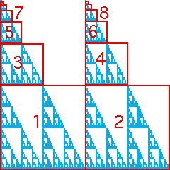

|  |
| r | s | theta |
phi | e | f |
| 1 | 0.5 | 0.5 | 0 |
0 | 0 | 0 |
| 2 | 0.5 | 0.5 | 0 |
0 | 0.5 | 0 |
| 3 | 0.25 | 0.25 | 0 |
0 | 0 | 0.5 |
| 4 | 0.25 | 0.25 | 0 |
0 | 0.5 | 0.5 |
| 5 | 0.125 | 0.125 | 0 |
0 | 0 | 0.75 |
| 6 | 0.125 | 0.125 | 0 |
0 | 0.5 | 0.75 |
| 7 | 0.0625 | 0.0625 | 0 |
0 | 0 | 0.875 |
| 8 | 0.0625 | 0.0625 | 0 |
0 | 0.5 | 0.875 |
| 9 | 0.03125 | 0.03125 | 0 |
0 | 0 | 0.9375 |
| 10 | 0.03125 | 0.03125 | 0 |
0 | 0.5 | 0.9375 |
| ... | ... | ... | ... |
... | ... | ... |
|
|
|
| Here are the IFS rules to generate this picture. Denote the whole picture by A. |
| Click each part of A to see the sequence of edges of the graph that generate that part. |
| Note the subsquares with addresses 1 and 2 are romes. So for example |
| T1(A) = T1(T1(A) ∪
T2(A) ∪ T3(A) ∪
T4(A)) |
| because each of the transitions 1 → 1, 1 → 2, 1 → 3, and
1 → 4 is allowed. |
| That is, the subsquare with address 1 contains a copy of A scaled by 1/2. |
| Similarly, the subsquare with address 2 contains a copy of A scaled by 1/2. |
| Because 3 and 4 are not romes, those subsquares do not contain copies of A scaled by 1/2. |
| Because 1 → 3 and 1 → 4 are allowed, both subsquares
3 and 4 contain copies of A, |
T3(T1(A)) and T4(T1(A)), both scaled
by a factor of 1/4. |
| Because 3 → 3 and 3 → 4 are allowed, both subsquares
3 and 4 contain copies of A, |
T3(T3(T1(A))) and T4(T3(T1(A))), both scaled
by a factor of 1/8. |
| Iterating the transition 3 → 3 accounts for an infinite
sequence of ever smaller copies of A: T3k(T1A), for
k = 1, 2, 3, ... . |
| Following each of these iterates by the transition 3 → 4 accounts for
another infinite sequence of ever smaller copies of A: T4(T3k(T1(A))),
for k = 1, 2, 3, ... . |
| In this fashion, A can be generated without memory, but here at the expense of using infinitely many
transformations. |
|